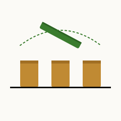
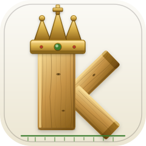
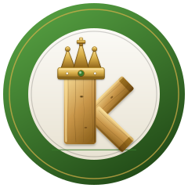

A · Meadow Badge
logo-mark.svg · App icon (Primary)

B · Chalk Sign
logo-mark-chalk.svg · Pitch lines
C · Ink Crest
logo-mark-ink.svg · Dark / dusk

D · Roundel Crest
logo-mark-roundel.svg · Medal style